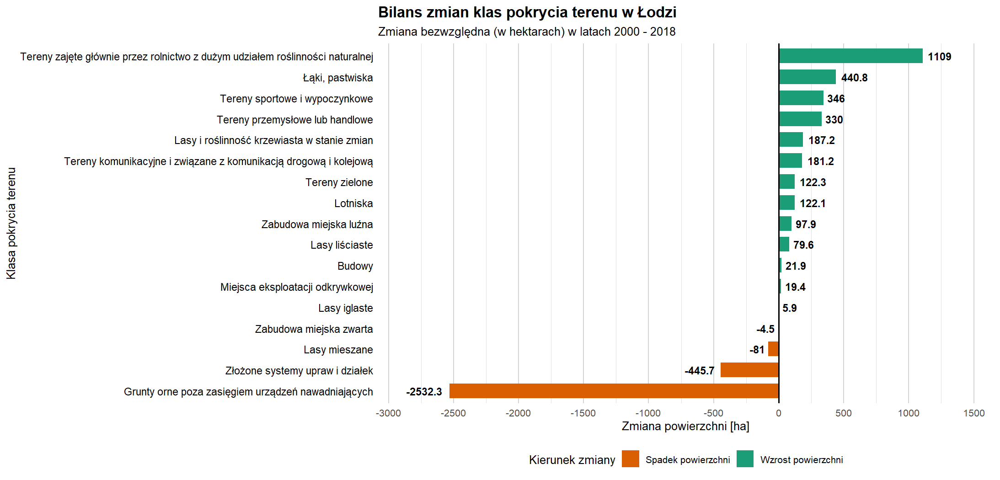
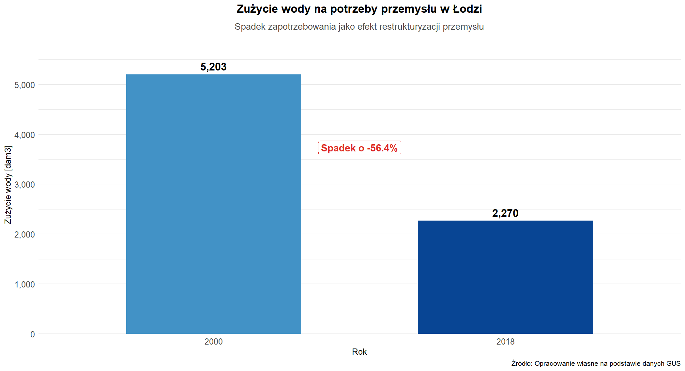
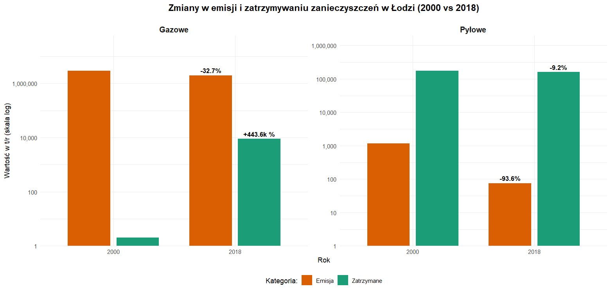
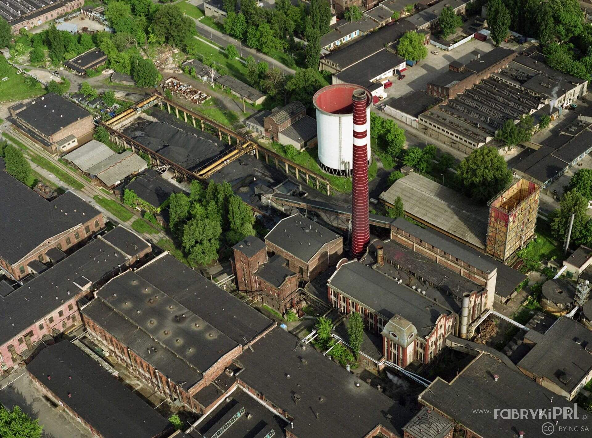
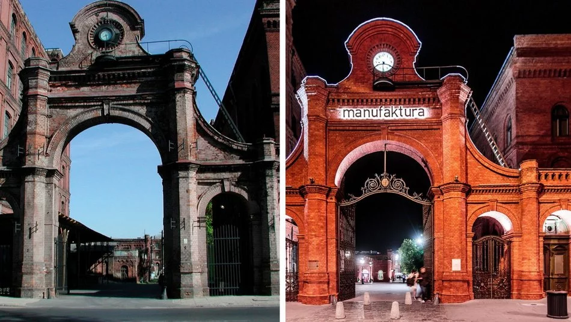

Interaktywna Mapa WebGIS
Wektory po cięciu do granic administracyjnych miasta. Porównanie geometrii dla roku 2000 i 2018.
Szczegółowe statystyki
Uzupełnienie bilansu powierzchniowego o dodatkowe parametry analityczne wygenerowane w środowisku R
Dane Corine Land Cover (CLC) dla lat 2000-2018 ujawniają paradoks: mimo odejścia od tradycyjnej
monokultury przemysłowej, powierzchnia terenów przemysłowo-handlowych w Łodzi wzrosła. Zjawisko
to interpretujemy jako wynik ekspansji sektora logistycznego i wielkopowierzchniowego handlu,
które zastąpiły przestarzałe, śródmiejskie zakłady włókiennicze. Nowoczesna gospodarka usługowa
Łodzi wymaga większych przestrzeni operacyjnych (centra logistyczne, huby przeładunkowe), co
znajduje odzwierciedlenie w przyroście klasy 121.

Równolegle obserwujemy procesy suburbanizacji i rewitalizacji. Niewielki spadek powierzchni
zabudowy miejskiej zwartej przy jednoczesnym wzroście zabudowy luźnej wskazuje na rozluźnianie
struktury miasta. Mieszkańcy przenoszą się z gęsto zabudowanego centrum na peryferyjne osiedla,
co w połączeniu z recyklingiem terenów pofabrycznych (przekształcanie ich w strefy komercyjne)
całkowicie zmienia funkcjonalne oblicze Łodzi. To „nowe” miasto zużywa o połowę mniej wody i
emituje o 90% mniej pyłów, co dowodzi, że wzrost powierzchni przemysłowo-handlowej w nowoczesnym
wydaniu idzie w parze z poprawą jakości życia i środowiska.
Ewolucja gospodarcza Łodzi w latach 2000-2018 to podróż od przestarzałej, energochłonnej
monokultury przemysłu lekkiego ku zdywersyfikowanej strukturze usługowo-przemysłowej. Dane
statystyczne nie tylko potwierdzają tę zmianę, ale wskazują na jej głęboki charakter
technologiczny.

Bezpośrednim dowodem na wygaszenie tradycyjnego przemysłu włókienniczego jest przedstawiony na
Ryc. 2 drastyczny spadek
zużycia wody w przemyśle (o ponad 56%). Branża tekstylna była jednym z najbardziej wodochłonnych
sektorów gospodarki - procesy barwienia i wykańczania tkanin wymagały ogromnych nakładów
surowca.
Równie wymownym wskaźnikiem jest radykalne zmniejszenie emisji pyłów (o 93,6%) oraz ogromny
wzrost
retencji zanieczyszczeń gazowych (Ryc. 3).

W 2000 roku gospodarka Łodzi opierała się na przestarzałych kotłowniach przyzakładowych.
Transformacja po 2004 roku (akcesja do UE) wymusiła na pozostałych i nowo powstających zakładach
wdrożenie nowoczesnych systemów filtracji i odsiarczania spalin. Dzisiejszy przemysł w Łodzi,
choć wciąż obecny, jest sektorem o wysokiej sprawności technologicznej. Zmiana ta wskazuje na
zastąpienie „kominów” przemysłu lekkiego przez zaawansowane linie produkcyjne i centra
operacyjne, które są znacznie bardziej przyjazne dla ekosystemu miejskiego.

Idealnym symbolem i flagowym przykładem opisanego procesu jest łódzka Manufaktura.
To przedsięwzięcie w pigułce obrazuje przejście od monokultury do nowoczesności: gigantyczny
kompleks fabryczny Izraela Poznańskiego, który przez dekady był jednym z największych źródeł
zanieczyszczeń i zużycia wody w centrum, został poddany spektakularnemu recyklingowi
przestrzeni.

Dziś, zamiast dymiących kominów i ścieków pofabrycznych, obszar ten generuje wysoką wartość
dodaną
poprzez handel, kulturę i usługi, stając się nowym, ekologicznym i ekonomicznym sercem
zdywersyfikowanej Łodzi.
Metodyka i parametry projektu
-
Dane przestrzenne: Baza Corine Land Cover (szczegóły w bibliografii).
-
Układ współrzędnych: EPSG:3035 (ETRS89 / LAEA Europe).
-
Geoprocessing: Cięcie wektorów do granic administracyjnych, rekalkulacja geometrii.
-
Wizualizacja: Pakiet ggplot2 (R).
Bibliografia i źródła danych
-
Copernicus Land Monitoring Service: Baza danych przestrzennych Corine Land Cover (warstwy 2000 i 2018).
-
Główny Urząd Statystyczny: Bank Danych Lokalnych - wskaźniki społeczno-ekonomiczne dla miasta Łodzi.
-
Kryńska E. (2001): „Determinanty Popytu na Pracę w Regionie Łódzkim w Latach Dziewięćdziesiątych”, Acta Universitatis Lodziensis, Folia Oeconomica, 154, 137-151.
-
Sieroń A.: „Łódź - transformacja gospodarcza miasta po 1989 roku”.